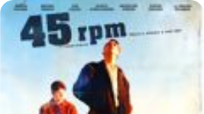
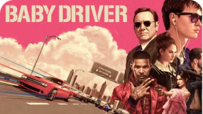

<!DOCTYPE html>
<html lang="en"></html>
<head>
    <meta charset="UTF-8">
    <meta name="viewport" content="width=device-width, initial-scale=1.0">
    <title>VinyStory</title>
    <link rel="icon" type="image/svg+xml" href="../assets/icons/logo_page.svg"/>
    <link rel="stylesheet" href="/src/css/style.css">
    <script type="module" src="/src/js/script.js"></script>
    <script type="module" src="/src/js/accordeon.js"></script>
    <script type="module" src="/src/js/carroussel.js"></script>
</head>
<body>
    <header class="header accueuil">
        <div class="header__left">
            <a href="../en/HighFidelity.html"></a>
            <h1 class="header__title"><a class="title__link" href="index.html">VinyStory</a></h1>
            
            <h1 class="header__tranparent"><a class="subtitle__link" href="index.html">Vin</a></h1>
        </div>
        <div class="header__right">
            
            <button class="menu-btn" aria-label="menu" aria-expanded="false" aria-controls="mainNav">
                <span class="menu-btn__bar menu__articles" aria-hidden="true"></span>
            </button>
            <nav class="menu" id="mainNav" aria-hidden="true">
                <ul class="menu__list">
                    <h1><a class="link__title" href="index.html">VinyStory</a></h1>
                    <li class="menu__item"><a class="menu__link" href="index.html">Accueil</a></li>
                    <div class="accordeon">
                        <details>
                            <summary class="menu__depliable">
                                <li class="menu__item summary__item">En savoir plus</li>
                            </summary>
                        
                            <div class="accordeon__element">
                                <li class="menu__item"><a class="menu__link" href="fonctionnement.html">Comment ça marche</a></li>
                                <li class="menu__item"><a class="menu__link" href="HighFidelity.html">High Fidelity</a></li>
                                <li class="menu__item"><a class="menu__link" href="chazelle.html">Damien Chazelle</a></li>
                                <li class="menu__item"><a class="menu__link" href="rock_vinyle.html">Vinyles Rock</a></li>
                                <li class="menu__item"><a class="menu__link" href="tdsotm.html">The Dark Side Of The Moon</a></li>
                            </div>
                        </details>
                    <li class="menu__item"><a class="menu__link" href="autres_projet.html">Autres projets</a></li>
                    <li class="menu__item"><a class="menu__link" href="contact.html">Contact</a></li>
                    <li class="menu__item"><a class="menu__link" href="a_propos.html">À propos</a></li>
                    <li class="menu__item"><a class="menu__link" href="infospratique.html">Glossaire</a></li>
                </ul>
            </nav>
        </div>
    </header>
    <div class="top">
        
    </div>
    <div class="article">
        <div class="chapo">
            <h2 class="article__title">High Fidelity, une lettre d'amour au vinyle</h2>
            <p class="arcticle__legende b2_3">High Fidelity, réalisé par Stephen Frears en 2000, explore l'obsession d'un collectionneur de vinyles, Rob Gordon, propriétaire d'un magasin de disques. Le film rend hommage à la passion musicale et à la relation unique entre les mélomanes et le vinyle.</p>
            <div class="article__pic">
                <video width="320" height="240" controls>
                    <source src="../assets/video/High_Fidelity_Trailer.mp4" type=video/mp4>
                </video>
                <p class="img__text b4">Bande-annonce du film High Fidelity</p>
            </div>
        </div>
        <div class="article__content">
            <h2 class="article__title">L'histoire de Rob et sa quête à travers la musique</h2>
            <div class="rubrique">
                <p class="rubrique__subtitle b1">Rob Gordon, un passionné de musique obsédé par le vinyle</p>
                <p class="text__para b2_3"><span class="bold">Rob Gordon</span> (interprété par <span class="bold orange__text">John Cusack</span>) est un passionné de musique qui tient un magasin de disques à Chicago. Obsédé par la musique, il organise et réorganise constamment ses vinyles selon divers critères : alphabétique, par genre, ou même en fonction de ses ruptures amoureuses. Le film tourne autour de ses réflexions sur ses relations passées, entrecoupées de discussions sur la musique, les albums et les artistes qui ont marqué sa vie.</p>
                <p class="text__para b2_3">Rob, comme beaucoup de collectionneurs de vinyles, <span class="bold">ne se contente pas d'écouter de la musique, il la vit pleinement</span>. Pour lui, le vinyle est <span class="bold">bien plus qu'un simple support musical</span>. C'est une partie de son identité, un miroir de ses émotions et expériences. <span class="bold">High Fidelity</span> capture parfaitement cette obsession des détails, qu'il s'agisse de la recherche du son parfait ou de la quête d'albums rares.</p>
                <div class="article__pic">
                    
                    <p class="img__text b4"><a class="img__link" href="https://fr.wikipedia.org/wiki/High_Fidelity">Image du film High Fidelity</a></p>
                </div>
            </div>
            <h2 class="article__title">L'importance du vinyle dans la culture musicale</h2>
            <div class="rubrique">
                <p class="rubrique__subtitle b1">Une expérience musicale authentique et engagée</p>
                <div class="rubrique__part">
                    <p class="text__para b2_3">L'une des raisons pour lesquelles le film <span class="bold">High Fidelity</span> résonne autant avec les mélomanes est qu'il montre comment la collection de vinyles peut être un moyen de définir sa <span class="bold">propre identité</span>. Dans le film, les discussions interminables sur les artistes, les albums et les classements reflètent un profond <span class="bold">respect pour le vinyle</span> en tant que support. Le film met en lumière un aspect important de la culture du vinyle : le fait que l'achat d'un album vinyle est souvent un acte délibéré, réfléchi, parfois même intime.</p>
                    <p class="text__para b2_3">Le vinyle est <span class="bold">bien plus qu'un simple objet de consommation</span>. Il représente <span class="bold">une manière de vivre la musique plus attentivement</span>, avec un <span class="bold">engagement personnel</span> que les formats numériques, avec leur accès instantané et leur dématérialisation, ne peuvent offrir. Cette idée traverse tout le film <span class="bold">High Fidelity</span> et contribue à sa popularité parmi les mélomanes et les collectionneurs de vinyles.</p>
                </div>
            </div>
            <h2 class="article__title">Autres films liés au vinyle</h2>
            <div class="carroussel">
                <div class="card first carroussel__item">
                    
                    <div class="card__items">
                        <h3 class="card__title">Un adolescent créant son premier vinyle</h3>
                        <p class="b2_3 card__para">
                            "45 RPM" raconte l'histoire d'un adolescent déterminé à créer son premier vinyle, révélant sa passion et l'authenticité du monde du vinyle.
                        </p>
                        <br>
                    </div>
                    <div class="card__link">
                        <p class="b2_3 link__text">
                            <a class="link__text" href="fonctionnement.html">En savoir plus</a>
                        </p>
                        
                    </div>
                </div>
                <div class="card carroussel__item">
                    
                    <div class="card__items">
                        <h3 class="card__title">Collection de vinyles pour créer des compilations musicales</h3>
                        <p class="b2_3 card__para">  
                            "Baby Driver" suit Baby, un chauffeur de fuite qui utilise la musique pour briller, tenté de quitter le crime avant un dernier travail risqué.
                        </p>
                    </div>
                    <div class="card__link">
                        <p class="b2_3 link__text">
                            En savoir plus
                        </p>
                        
                    </div>
                </div>
                <div class="card carroussel__item">
                    
                    <div class="card__items">
                        <h3 class="card__title">Des personnes diffusant de la musique illégale en dehors de la nation</h3>
                        <p class="b2_3 card__para">             
                            "Pirate Radio" raconte l'histoire d'une station pirate des années 1960 diffusant du rock depuis un bateau, célébrant la musique rebelle de l'époque.
                        </p>
                    </div>
                    <div class="card__link">
                        <p class="b2_3 link__text">
                            En savoir plus
                        </p>
                        
                    </div>
                </div>
                <div class="card carroussel__item last">
                    
                    <div class="card__items">
                        <h3 class="card__title">La série High Fidelity</h3>
                        <p class="b2_3 card__para">     
                            La série "High Fidelity" suit Rob, propriétaire d'un magasin de disques à New York, qui revisite ses relations passées pour comprendre ses échecs amoureux, mêlant
                        </p>
                    </div>
                    <br>
                    <div class="card__link">
                        <p class="b2_3 link__text">
                            En savoir plus
                        </p>
                        
                    </div>
                </div>
                <div class="carroussel__controls">
                    <button class="carroussel__button carroussel__button--prev" aria-label="Défiler vers la gauche">
                        
                    </button>
                    <button class="carroussel__button carroussel__button--next" aria-label="Défiler vers la droite">
                        
                    </button>
                </div>
            </div>
        </div>
    </div>
    <div class="footer">
        <a class="footer__top" href="index.html">
            <h1 class="footer__title">VinyStory</h1>
            
        </a>
        <div class="footer__line"></div>
        <div class="footer__reseaux">
            
            
            
        </div>
        <div class="footer__line"></div>
        <div class="footer__menu">
            <p class="footer__item b1"><a class="footer__link" href="index.html">Accueil</a></p>
            <p class="footer__item b1"><a class="footer__link" href="fonctionnement.html">Les vinyles</a></p>
            <p class="footer__item b1"><a class="footer__link" href="HighFidelity.html">High fidelity</a></p>
            <p class="footer__item b1"><a class="footer__link" href="chazelle.html">Damien Chazelle</a></p>
            <p class="footer__item b1"><a class="footer__link" href="rock_vinyle.html">Vinyles Rock</a></p>
            <p class="footer__item b1"><a class="footer__link" href="tdsotm.html">The Dark Side of the Moon</a></p>
            <p class="footer__item b1"><a class="footer__link" href="autres_projet.html">Autres projets</a></p>
            <p class="footer__item b1"><a class="footer__link" href="a_propos.html">À propos</a></p>
            <p class="footer__item b1"><a class="footer__link" href="contact.html">Contact</a></p>
            <p class="footer__item b1"><a class="footer__link" href="glossaire.html">Glossaire</a></p>
        </div>
        <div class="footer__line"></div>
        <div class="footer__text">
            <p class="text__item b1">Ce site web est fait dans le cadre d’un projet pédagogique du BUT MMI de Montbéliard</p>
            <p class="text__item b1">Pour en savoir plus <a class="item__link" href="https://blogdummi.fr/">cliquez ici</a></p>
            <p class="text__item b1">Mathis Guellati</p>
        </div>
    </div>
</body>